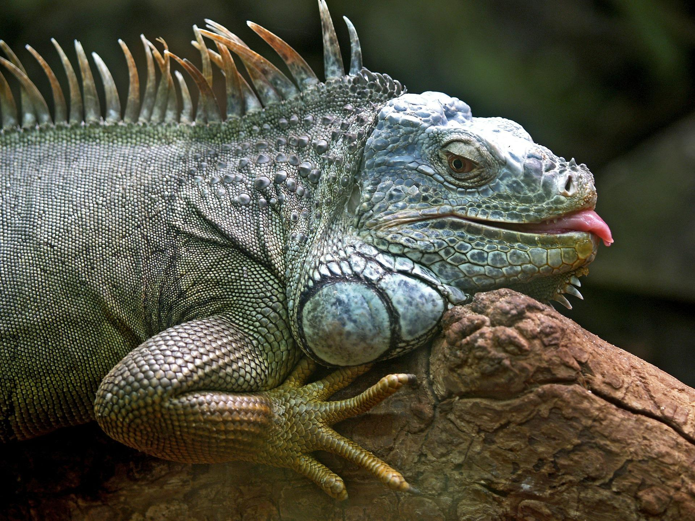

A iguana é um réptil que habita regiões tropicais da América. Podemos encontrar iguanas na região norte do Brasil, países da América Central e México. Vivem, principalmente, em áreas florestais. Devido à sua excelente habilidade para subir e andar em árvores, as iguanas tendem a habitar as mesmas, longe dos predadores.
1 -> Uma iguana vive entre 10-13 anos
2 -> Uma iguana adulta pode atingir 170 cm de comprimento
3 -> As iguanas possuem um excelente sistema de visão, podendo visualizar objetos a grandes distâncias. Costumam-se comunicar com outras iguanas através de sinais visuais
4 -> Este ser vivo detesta temperaturas frias